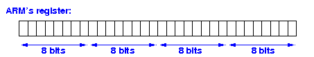

|
See: click here
The memory cannot even transfer some data from one memory cell to another memory cell on its own (without the use of the CPU)
In fact:
|
Because the ALU (Arithmetic and Logic Unit) is the computation circuit of the CPU and the ALU takes inputs from the general purpose registers, a rule of thumb in assembler programming is:
|
|
|  |
byte (8 bites) <----- byte operands
short (16 bits)
int (32 bits)
|
|
Later, I will show you assembler programming example.
byte (8 bits)
short (16 bites) <----- short operands
int (32 bits)
|
|
Later, I will show you assembler programming example.
I.e.: the processor does not need to perform any operation after storing the 4 bytes into the register.